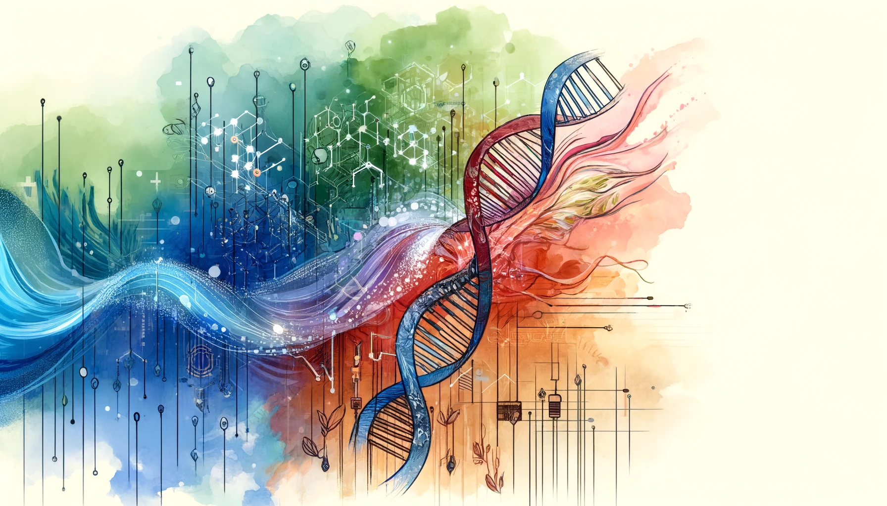

Eric J Ma's Website
written by Eric J. Ma on 2024-04-17 | tags: bioit world conference data science llms software development productivity tools ai training code completion debugging documentation commit messages

In this blog post, I share insights from my talk at the BioIT World conference in 2024, focusing on how LLMs empower data scientists and the necessity of software development skills in data science. I discuss practical applications of LLMs, such as code completion, documentation, debugging, and learning new domains, highlighting their role in enhancing productivity and efficiency. LLMs not only automate mundane tasks but also facilitate rapid knowledge acquisition, proving to be invaluable tools for data science teams. How could LLMs transform your data science work?
I recently delivered a talk at the BioIT World conference in 2024. The slides can be found online here. This post is a written version of that same talk. (As Joyce, the moderator, alluded to afterwards, this talk probably could have been titled "Prompt Engineering for Data Scientist Efficiency".)
Two threads
The talk is inspired by two parallel threads running through my professional life.
LLMs are an empowerment tool
The first is that LLMs are incredibly empowering as a tool. Moderna, where I work, has fully embraced generative AI as a productivity and efficiency tool, where everyone in the company has access to GPT-4's longest context (128k) model by one means or another. There is an internal academy that everyone in the company is asked to attend that provides training on how artificial intelligence works and a forum for individuals to brainstorm use cases on how to use AI to improve individual productivity. The result has been a flowering of citizen-generated use cases - and some have followed up on it with concrete action! I have seen non-programming scientists chat with LLMs to help them build Python tooling for mass spectrometry analysis, and I have seen colleagues take the contents of documents and translate them into their native language to help with better understanding the jargon inside. At the same time, while we know that LLMs contain super-human knowledge, they are also prone to mistakes through hallucination. As such, we need to be skilled enough to verify LLM outputs.
Data science involves writing software
The second thread is that data science necessarily involves writing software. This argument starts with Hadley Wickham's talk, "You can't do data science in a GUI." The crux of the argument is that GUIs are too restrictive for the complexity of problems that data scientists need to solve. As such, programming skills are necessary to wrangle that level of complexity. The corollary is that if we coded in a programming language without getting organized like a software developer, our codebase would rapidly become chaotic. As such, software development skills are necessary and can be developed. (This skill is trainable, motivating why I created the Data Science Bootstrap Notes.)
Recap
So, to recap, there are two threads:
- LLMs are incredibly empowering as a tool, and
- Data science necessarily involves writing software
What does this mean for data scientists using LLMs?
LLMs enable data science teams to build great software
At a basic level, LLMs can enable a data science team to build software at a higher skill level than they might otherwise by drafting boilerplate code and lowering the energy barrier to adopting good practices.
Code completion
Code completion using LLMs is probably the most well-known. We know that if you start typing something along the lines of:
from sklearn.ensemble import RandomForestRegressor import pandas as pd # Read the file `data.csv` and create a Random Forest # regressor model to predict `output` from the rest # of the columns.
Then, code copilot tools such as GitHub Copilot can use the comment as a prompt to complete the code necessary to accomplish what you're trying to do. Being as specific as possible helps you get closer to completing the code one-shot.
In-line documentation
For code blocks that become functions, with the function body filled out, what's left is writing the docstrings. 98-99% of the time, GitHub Copilot (as an example code completer) can accurately deliver what I need in the docstring, enabling me to use it as a fancy tab completer. As an example, documenting the arguments to a function is usually pretty annoying, but I can usually start with :pa and, Copilot will fill out the rest of the line for me.
Test writing
Once you have a function body, the following prompt can help you with test writing:
@prompt def draft_tests(function_body): """I have the following function {{ function_body }} Draft me three unit tests. """
As with the first case, the more specific the instructions, the easier it will be for LLMs to help draft test cases.
LLMs give your data science teams superpowers
But those three use cases are rather pedestrian -- and typical between data scientists and software engineers. What other kinds of use cases can we have for LLMs to aid data scientists?
Refactor entire notebooks
Data scientists work in notebooks, often churning out entire notebooks full of exploratory code. Some of that code could be organized better. What if we had a bot that could automatically parse the entire notebook and help me propose refactored code? Suppose you have access to an LLM with a very long context window (e.g. GPT4-128k or Claude 3). In that case, you can do just that: either copy and paste the entire JSON of the notebook or export it as a Python script and then use the following prompt to obtain a refactoring of the notebook:
@prompt def refactor(notebook_json): """Given the following Jupyter notebook code: {{ notebook_json }} Help me propose a suite of functions that can be refactored out from the notebook. """
Debug stack traces
If you're an experienced data scientist, there may be errors for which one glance at the stack trace, and you know exactly what the problem is. However, for the relatively junior data scientist, debugging code can be incredibly challenging, but having access to a well-trained LLM can help this persona grow in debugging skills. The key challenge is overcoming the feeling of being overwhelmed when faced with a stack trace 14 levels deep, where the bug in one's code might be buried in the middle. Turns out, this prompt can be of help to debuggers of all skill levels:
@prompt def debug(stack_trace): """Given the following stack trace: {{ stack_trace }} Help me debug what's going on here by proposing hypotheses as to why I am encountering this error. """
The LLM response usually quickly zeros in on the key issue at hand, and most of the time, it will prioritize the most probable cause first, allowing one to get to work testing each of those hypotheses. Even better, LLMs are usually trained to be polite and nonjudgmental, making it easier for a less experienced data scientist to pick up the skill of debugging without the fear of being judged by a grumpy senior data scientist.
That said, if the group fears asking questions because of being judged or you have a grumpy senior-level data scientist, I'd argue that you have a culture problem -- that's for another day!
Draft long-form documentation
We know that documentation benefits everyone but never gets written. But this doesn't have to be the normal state of things! If you're already doing presentations to customers, collaborators, and stakeholders, then please, please, please record and transcribe them! This is because the transcript can become a source of material for the Diataxis framework's four types of documentation! And this prompt can help you kickstart that document writing:
@prompt def draft_documentation( presentation_transcript, diataxis_spec, documentation_type ): """I have the following meeting transcript: {{ presentation_transcript }} Here is the Diataxis spec for {{ documentation_type }}: {{ diataxis_spec }} Please draft for me the {{ documentation_type }} using the transcript as source material. """
Write commit messages
Speaking of documentation, commit messages are also a form of documentation! Well-written commit messages have the characteristic of being precise, descriptive, and containing the intent of a change. But they're a chore to write -- why do I have to duplicate my one-liner of code with a two-liner plain language description? Well, as it turns out, if we do so, it makes debugging changes to our codebase much easier and lets us figure out who made a specific line change way down the road!
Since I built the LlamaBot git commit message writer hook, I've no longer written commit messages by hand. Even my slides, written entirely in Markdown, were committed in chunks with messages written by my trusty git commit writer. Here's an example of an actual commit:
commit 5ffff99bae4611bdcea09187d839e5b40b9ef630
Author: Eric Ma <ericmajinglong@gmail.com>
Date: Mon Apr 15 15:55:18 2024 -0400
feat(index): update professional title
and add about sections
- Update the professional title to
"Senior Principal Data Scientist" at Moderna.
- Add a humorous "About me" section
with claims of GPT-4 prompt engineering experience,
telepathy, and time-traveling emails.
- Introduce a more serious "About me (take 2)" section
detailing roles and expertise.
- Highlight involvement in Generative AI at Moderna,
emphasizing democratized access to GPT,
community building through an internal academy,
and the development of citizen-generated use cases.
If you also want to have automatic commit message writing, you can access it with an OpenAI API key and LlamaBot:
pip install -U llamabot llamabot git install-commit-message-hook # Ensure you have an OpenAI API Key
Draft database queries
I work in the biotech Research space, where we don't often have structured data in databases but piles of Excel spreadsheets and CSV files. As such, my SQL skills aren't as good as those of some data analysts and other data scientists who work with production data warehoused in SQL databases. So, composing and writing SQL (for me at least) is a bit of a chore. I've shortcut picking up SQL by using the following prompt:
@prompt def nl2sql(nl_request, schema): """Given the following database schema: {{ schema }} And the following natural language request: {{ nl_request }} Return for me the SQL necessary to satisfy the natural language request. """
Ask questions of code repositories
As data scientists, we use open-source tools, and not all of them may have the best documentation available. Or their codebase (and documentation source files) may be too big to efficiently navigate. No problem: I built using LlamaBot, I built a RAG tool for code repositories that allows me to chat with the repository itself:
llamabot repo chat https://github.com/webpro/reveal-md.git \ --checkout main \ --model-name gpt-4-0125-preview \ --panel
The --panel flag fires up a web chat UI based on the panel UI building framework:

(That image above was set as a background for an individual slide in my actual presentation!)
Learn a new domain
Data scientists, to be most effective, need to ramp up very quickly on their domain knowledge. Having access to a non-judgmental, personalized tutor can be incredibly empowering for picking up a new domain that one is not well-versed in. As an example, I'm not very well-versed in analytical chemistry. however, thanks to the use of GPT4, I can pick up analytical chemistry concepts from a non-judgmental robot, instead of a judgmental human. Here's an example of something I didn't really understand. In analytical chemistry, there is this term called %A and %B. these were completely foreign to me as I was trained in microbiology and biochemistry in my undergrad days. So I asked GPT for to explain it to me the way Richard Feynman would:

More generally, I've used the following prompt to help me pick up, almost anything at an undergraduate level:
@prompt def learn(concept, education_level): """You are an expert in {{ concept }}. I am looking to understand {{ concept }}. Explain it to me the way Richard Feynman would explain it to a student in {{ education_level }}. """
Add emojis to your talk
Finally, LLMs can be used to add emojis to your talk! Why bother going through the titles one by one and wrangling fists and knuckles over what emoji to put before each slide? Especially for someone like me who has no emoji sense, I just delegate this off to an LLM to do for me!
@prompt def add_emojis(talk_md): """Given the following Markdown slide deck: {{ talk_md }} Add emojis to all of the title headers while preserving the original text. """
Summary
The hardest part of data science can sometimes be the routine parts. This is where LLMs have the potential for a really great impact. Things like documenting my work, checking the correctness of my work, rapidly ramping up new domain knowledge, and more can be accelerated using LLMs.
I'd like to argue that we are entering a productive new world! LLMs are great productivity tools if wielded correctly. They can really supercharge a data science team by helping them supercharge their learning and automating away a ton of boring stuff. How do you see LLMs being a useful tool for your data science teammates?
Cite this blog post:
@article{
ericmjl-2024-how-llms-can-accelerate-data-science,
author = {Eric J. Ma},
title = {How LLMs can accelerate data science},
year = {2024},
month = {04},
day = {17},
howpublished = {\url{https://ericmjl.github.io}},
journal = {Eric J. Ma's Blog},
url = {https://ericmjl.github.io/blog/2024/4/17/how-llms-can-accelerate-data-science},
}
I send out a newsletter with tips and tools for data scientists. Come check it out at Substack.
If you would like to sponsor the coffee that goes into making my posts, please consider GitHub Sponsors!
Finally, I do free 30-minute GenAI strategy calls for teams that are looking to leverage GenAI for maximum impact. Consider booking a call on Calendly if you're interested!